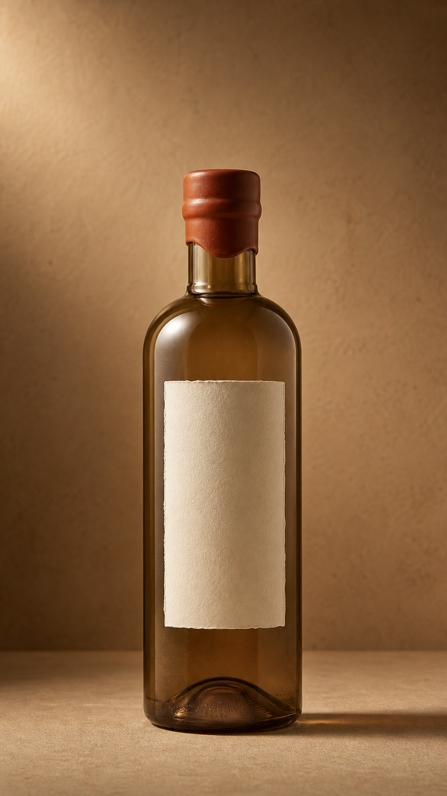
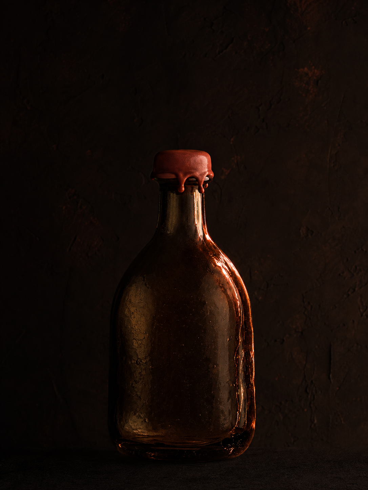

Pressed at first light.
Agave hearts hauled in before the sun cracks the ridge. Stone-pressed slow, the way the highlands have asked since the road in was a footpath. Nothing accelerated.
A single high-desert mezcal, pressed slow under the sun and bottled once a year. Made for the long afternoon.

Agave hearts hauled in before the sun cracks the ridge. Stone-pressed slow, the way the highlands have asked since the road in was a footpath.
Agave hearts hauled in before the sun cracks the ridge. Stone-pressed slow, the way the highlands have asked since the road in was a footpath. Nothing accelerated.
The light flattens and shadows pull in tight. One bottle, filled by hand, sealed with wax the colour of the wall it leans against. No second label, no second thoughts.
Held in clay while the wall outside cools from sienna into rust. The spirit reads the day back to itself, listens to the room, and slows.
A short glass, no ice. The bottle goes back on its shelf and the wall keeps the last of the heat. This is the hour it was built for.
Everything VESPRA promises fits on a single page, because there is only ever one bottle to describe.
We build one bottle a year because that is what the agave allows. Anything else would be a brochure, not a spirit.
The wall behind the still is the one my grandfather pressed against to hear the copper sing. The sun crosses it twice a day. The bottle is what we have to show for it.
Mateo Salvatierra, maestro mezcalero

The wall keeps the last of the heat. The bottle keeps the rest.
This year's release opens for reservation at the autumn equinox.
Reserve a bottle